| Cumulative threshold | Cloglog threshold | Description | Fractional predicted area | Training omission rate | Test omission rate | P-value |
|---|
| 1.000 | 0.006 | Fixed cumulative value 1 | 0.237 | 0.000 | 0.000 | 5.525E-7 |
| 5.000 | 0.042 | Fixed cumulative value 5 | 0.103 | 0.000 | 0.000 | 1.326E-10 |
| 10.000 | 0.110 | Fixed cumulative value 10 | 0.060 | 0.000 | 0.000 | 6.357E-13 |
| 13.406 | 0.182 | Minimum training presence | 0.047 | 0.000 | 0.100 | 1.123E-11 |
| 23.860 | 0.403 | 10 percentile training presence | 0.028 | 0.091 | 0.200 | 1.813E-11 |
| 13.440 | 0.183 | Equal training sensitivity and specificity | 0.047 | 0.061 | 0.100 | 1.123E-11 |
| 13.406 | 0.182 | Maximum training sensitivity plus specificity | 0.047 | 0.000 | 0.100 | 1.123E-11 |
| 12.686 | 0.165 | Equal test sensitivity and specificity | 0.050 | 0.000 | 0.000 | 8.897E-14 |
| 12.686 | 0.165 | Maximum test sensitivity plus specificity | 0.050 | 0.000 | 0.000 | 8.897E-14 |
| 3.035 | 0.024 | Balance training omission, predicted area and threshold value | 0.139 | 0.000 | 0.000 | 2.739E-9 |
| 10.151 | 0.117 | Equate entropy of thresholded and original distributions | 0.060 | 0.000 | 0.000 | 5.659E-13 |

 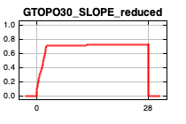
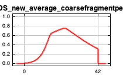
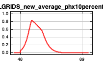
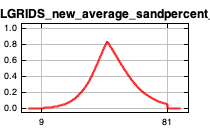
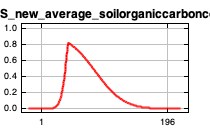
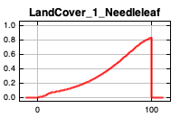
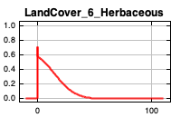
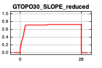
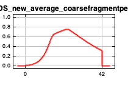
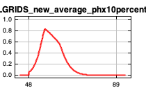
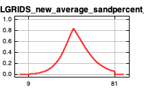
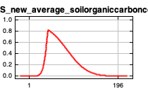
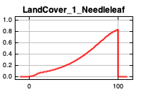
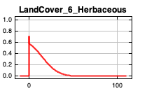